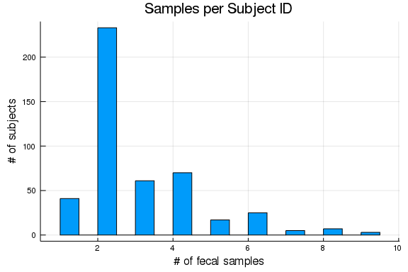

Now that we have the metadata in long form, it's a bit easier to query it for the stuff we want. I'm using the macros available from the DataFramesMeta package.
As an example, how many unique subjects do we have at least one sample for?
# cd(dirname(@__FILE__)) # hide
ENV["GKSwstype"] = "100" # hide
using ECHOAnalysis # hideusing DataFrames
using DataFramesMeta
using PrettyTables
using StatsPlots
allmeta = load_metadata(datatoml)
@linq allmeta |>
select(:studyID) |>
unique |> nrowOr, how many subjects have two or more fecal samples?
sampleinfo = @linq allmeta |>
where(:metadatum .== "CollectionRep") |>
by(:studyID, nsamples = length(:studyID))
histogram(sampleinfo[:nsamples], legend=false,
title="Samples per Subject ID",
xlabel="# of fecal samples", ylabel="# of subjects")
isdir(datatoml["figures"]["path"]) || mkdir(datatoml["figures"]["path"]) # hide
savefig(joinpath(datatoml["figures"]["path"], "03-samples-per-subject.png")) # hide
Wow - there are a couple of subjects that have a lot of samples. Taking a look to see what's going on there:
# Which subjects are those?
highsamplers = @linq allmeta |>
where(:metadatum .== "CollectionRep") |>
by(:studyID, nsamples = length(:studyID)) |>
where(:nsamples .>= 5) |>
select(:studyID, :nsamples)
pretty_table(highsamplers)At this stage, what I care about are samples with metagenomes, which are inidcated by the DOM metadatum. To find all of the studyID/timepoint combos that have that have metagenomes:
# filter on metagenomes (DOM = "Date of Metagenome")
highsamplers = @linq filter(r-> r[:studyID] in highsamplers[:studyID], allmeta) |>
where(:metadatum .== "DOM") |>
orderby(:studyID, :timepoint)
first(highsamplers, 15) |> pretty_tableSo a bunch of these are where multiple samples were given for the same timepoint (eg C0202_4F_1A and _2A) and/or both genotech and enthanol samples.
mgxsamples = @linq allmeta |>
where(:metadatum .== "DOM") |>
select(:studyID, :timepoint) |>
unique
sort!(mgxsamples, :studyID);
first(mgxsamples, 5) |> pretty_tableAnd we can get metadata for these samples using the getfocusmetadata function, which converts the longform data into a wide table with one row per subject/timepoint pair. Metadata from "timpoint 0" (that is, non time-dependent data) is added to every row for that subject.
samples = map(row-> (subject=row[:studyID], timepoint=row[:timepoint]), eachrow(mgxsamples))
focus = getfocusmetadata(allmeta, samples)
sort!(focus, [:subject, :timepoint])
pretty_table(focus)